About us
Digital Humanists from different universities and research centres of excellence
The realisation and the quality of the produced knowledge graph will be ensured by the research unit of Bologna (UNIBO: PI Marilena Daquino, with the collaboration of Francesca Tomasi, director of the /DH.arc centre), whose expertise in knowledge organisation and knowledge representation is proven by several national and international projects (/DH.ARC - projects) and publications, namely: ontologies for cultural heritage, e.g. HiCO (Daquino, Tomasi 2015); knowledge graphs, e.g. Zeri & LODE (Daquino et al. 2017); Semantic scholarly editions, e.g. Paolo Bufalini’s notebook (Daquino, Giovannetti, Tomasi 2019), Vespasiano da Bisticci’s letters (Tomasi 2013); LOD-based native cataloguing platforms, (e.g. ARTchives), the digital library of the Department of Classical Philology and Italian Studies - University of Bologna (DL FICLIT), the LOD catalogue of music heritage and interfaces for searching, browsing, and querying LOD (musoW).
The CNR research unit of Pisa (Alessia Bardi, Riccardo Del Gratta, and Angelo Mario Del Grosso) will develop and maintain the backend of the ATLAS platform, including the services and the applications it provides to the end users and for the compliance with the principles of FAIRness. The participation of ISTI and ILC to several projects and research infrastructures proves the expertise of the CNR unit on the infrastructural side for DH research, documented in different publications related to CLARIN (Nicolas et al. 2017; Boschetti et al. 2020; Albanesi e Del Gratta 2019), Parthenos (Frosini et al. 2018; Bardi and Frosini 2017) and OpenAIRE (Manghi et al. 2019; Baglioni et al. 2019). Besides, the unit pioneered digital scholarly platforms, from the acknowledged philological work stations such as BAMBI, DiPhilos and PinakesText, to Computer-Assisted Translation (CAT) tools like TRADUCO (Bozzi et al. 2019). The CNR unit has also experience in many project's thematics and services, such as 1) data and metadata aggregation and interoperability (Bardi et al. 2014; Manghi et al. 2014) 2) advanced text analysis (Montemagni 2013); 3) multidimensional indexing (Del Grosso 2013); 4) linguistic and semantic enrichment (Del Grosso et al. 2018); 5) intelligent querying of the resources (Del Gratta et al. 2016); 6) data models and information systems for scholarly communication (Bardi and Manghi 2014).
The feasibility of selected research enquiries will be co-designed and evaluated by domain experts of the research unit of Venezia (Marina Buzzoni, Franz Fischer, Roberto Rosselli del Turco). This unit has long and well-documented experience in Digital Humanities attested by publications (e.g. Buzzoni 2016; Burgio, Buzzoni, Ghersetti 2015; Fischer 2017; Rosselli Del Turco 2019, Buzzoni, Monella, Rosselli Del Turco, et al. 2021), research projects and tool development, such as ALIM and EVT, as well as a wide range of further digital scholarly editions (e.g. Digital Marco Polo, Digital Ramusio Project, St. Patrick’s Confessio, Digital Vercelli Book), collections (e.g. Musisque Deoque, Digital Corpus of Literary Papyri), catalogues (e.g. BIFLOW; Nuova Biblioteca Manoscritta) and tools (e.g. Cadmus, Viscoll, Pede certo, EVT); cf. VeDPH - research. The unit will draw on the resources and expertise of the Venice Centre for Digital and Public Humanities (Fischer, director; Buzzoni, member; Rosselli Del Turco, affiliate).
People
Meet the team of the project. We are hiring! So keep in touch.
-
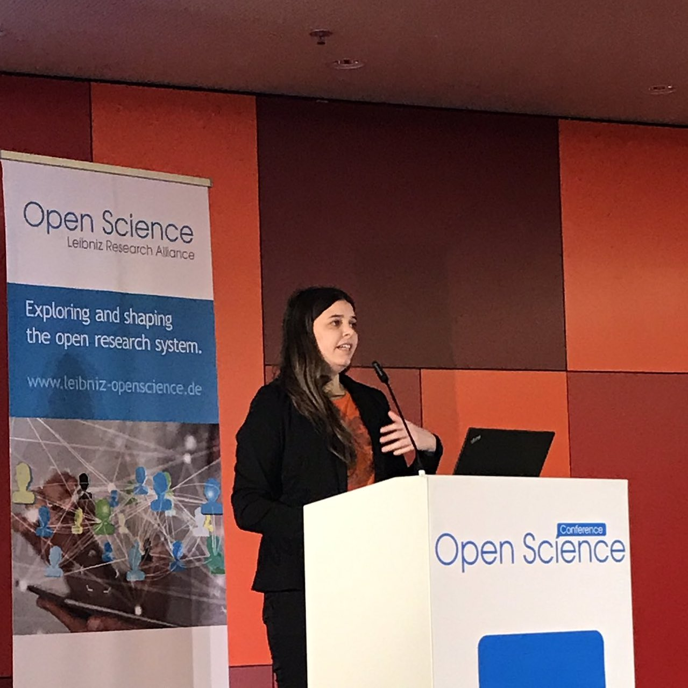
Alessia Bardi
CNR
-
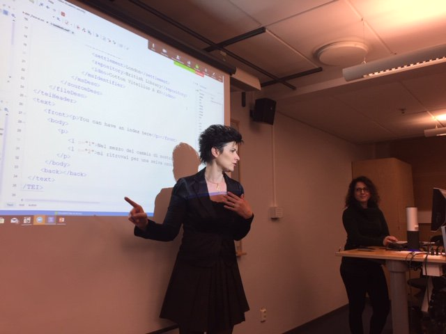
Marina Buzzoni
University Ca' Foscari of Venice
-
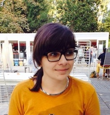
Marilena Daquino
University of Bologna (coordinator)
-
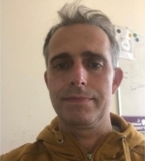
Riccardo Del Gratta
CNR
-
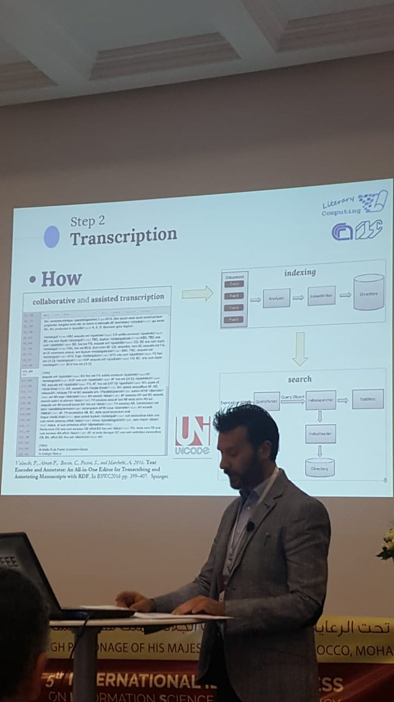
Angelo Maria Del Grosso
CNR
-
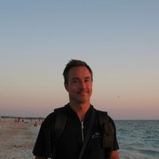
Roberto Rosselli del Turco
University Ca' Foscari of Venice
-
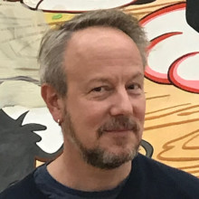
Franz Fischer
University Ca' Foscari of Venice
-
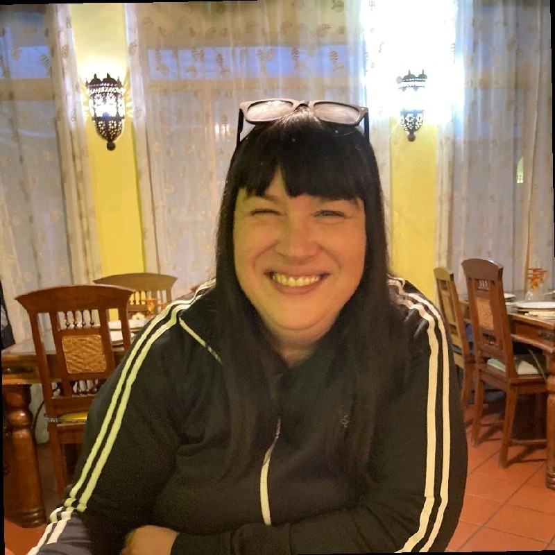
Francesca Tomasi
University of Bologna (coordinator)
-
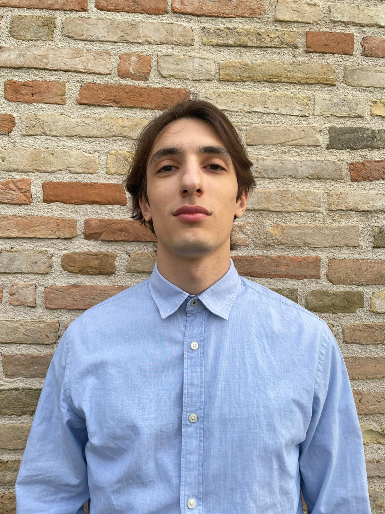
Sebastiano Giacomini
University of Bologna
-
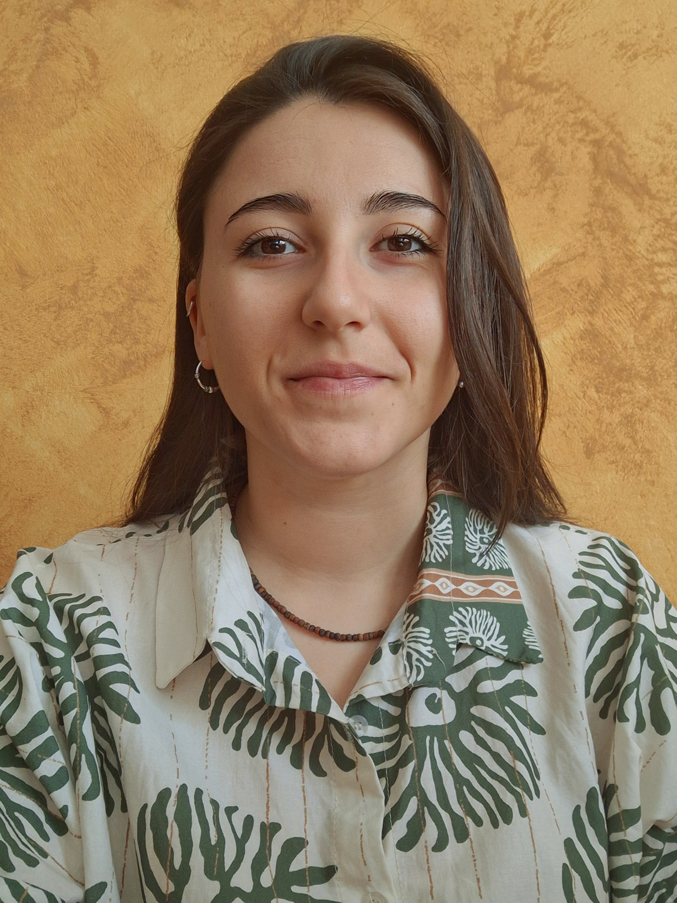
Giorgia Rubin
CNR
-
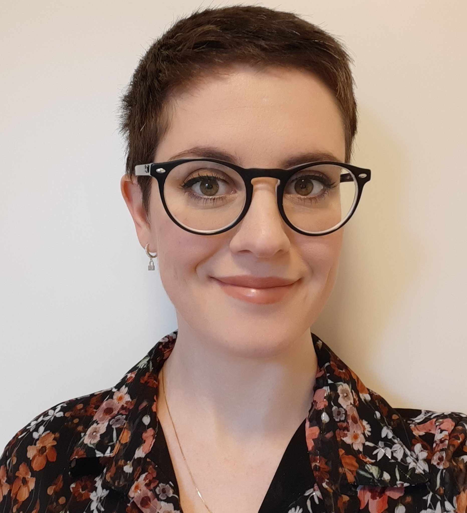
Chiara Martignano
University Ca' Foscari of Venice
LINKS
REFERENCES
Albanesi, Del Gratta (2019). OpeNER and PANACEA, CLARIN ANNUAL CONFERENCE.
Baglioni et al. (2019). DOI
Bardi and Frosini (2017). Building a federation of digital humanities infrastructures. ERCIM News, 28–29.
Bardi and Manghi (2014). Enhanced publications. Liber Quarterly, 23(4).
Bardi et al. (2014). DOI.
Boschetti et al. (2020). ‘Tea for two’: the Archive of the Italian Latinity of the Middle Ages meets the CLARIN infrastructure, in CLARIN ANNUAL CONFERENCE 2020.
Boschetti, Del Gratta, Del Grosso (2017). The role of digital scholarly editors in the design of components for cooperative philology. In: Advances in Digital Scholarly Editing.
Bozzi, Corradini, Ferrari (2019). Percorsi di linguistica e di filologia computazionali. Edizioni ETS.
Buzzoni, Monella, Rosselli Del Turco, et al. (2021) “Tea for two”: the Archive of the Italian Latinity of the Middle Ages Meets the CLARIN Infrastructure , CLARIN Annual Conference 2020.
Buzzoni et al. (2016). Open versus closed recensions (Pasquali). DIGITAL SCHOLARSHIP IN THE HUMANITIES, 31.
Burgio, Buzzoni, Ghersetti (2015). Giovanni Battista Ramusio "Dei Viaggi di Messer Marco Polo". Edizione critica digitale. LINK.
Carriero et al. (2019). ArCo. DOI
Daquino (2020). A computational analysis of art historical linked data for assessing authoritativeness of attributions. DOI
Daquino, Giovannetti, Tomasi (2019). https://doi.org/10.6092/issn.2532-8816/9091
Daquino et al. (2017). Enhancing semantic expressivity in the cultural heritage domain. https://doi.org/10.1145/3051487
Daquino, Tomasi (2015). Historical Context Ontology https://doi.org/10.1007/978-3-319-24129-6_37
Daquino et al. (2022) CLEF DOI
Del Grosso et al. (2018). Scanning is Just the Beginning. DOI
Del Grosso (2017). Domain Driven Design and Domain Specific Modelling for Digital Textual Scholarship”, Historical Source Edition 2.0.
Del Grosso (2013). Indexing techniques and variant readings management. Studia Graeco-Arabica, 3.
Del Gratta et al. (2016). Cooperative Philology on the Way to Web Services. DOI
Fischer (2017). Digital corpora and scholarly editions of Latin texts DOI
Griseldaonline (2020). LINK
Franzini, Terras, Mahony (2016). A catalogue of digital editions. Digital scholarly editing: Theories and practices.
Frosini et al. (2018). An aggregation framework for digital humanities infrastructures. SCIRES-IT. DOI
Giagnolini et al. (2022) LINK
Groth et al. (2010). The anatomy of a nanopublication. Information Services & Use, 30(1-2)
Hall (2019). Digital Humanities and Italian Studies: Intersections and Oppositions. Italian Culture, 37:2.
Jabbari et al. (2016). What is DevOps? DOI
Manghi et al. (2019). OpenAIRE Research Graph Dump. DOI
Manghi et al. (2014). The D-NET software toolkit: A framework for the realization, maintenance, and operation of aggregative infrastructures. DOI
Montemagni S. (2013). DH@ILC. LINK
Nicolas et al. (2017). CLARIN-IT: State of Affairs, Challenges and Opportunities. LINK
O'Donnell,Rosselli Del Turco (2020). Good things come in small packages. DOI
Palmero, Aprosio, Moretti (2018). Tint 2.0: An all-inclusive Suite for NLP in Italian. LINK
Peroni, Shotton (2018). DOI
Rosselli Del Turco (2019). DOI
Sahle et al. (2020). LINK
Tomasi (2013). LINK